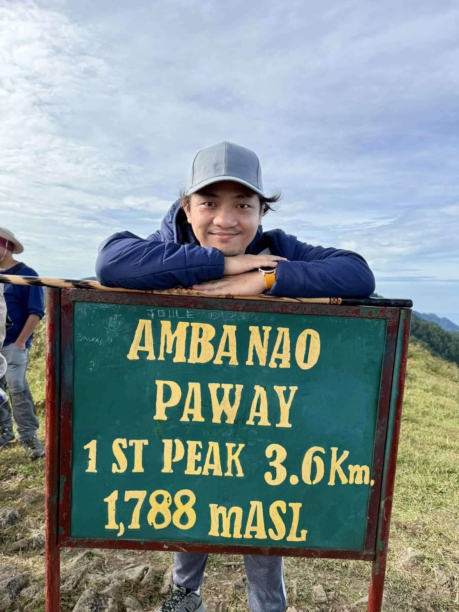

Benison Porio is a Registered Electrical Engineer and Master Electrician who is pursuing a career in the programming industry, driven by his passion for technology since 2020. He is passionate about problem-solving, critical thinking, project management, and delivering quality service to clients.
Throughout his academic and professional journey, he has developed strong leadership, teamwork, and project management skills through various projects and collaborative experiences. During his school years, he consistently took on leadership roles in group activities and competitions, including MathWizard and the Electrical Engineering Quiz Show. These experiences strengthened his ability to lead teams, manage tasks, coordinate projects, and achieve goals.
Now, he aims to combine his engineering background, project management experience, and programming skills to pursue opportunities in the technology industry, particularly in cybersecurity.
Running

Hiking
Song Writing
Coding
+63-916-560-7831
benisonporio2@gmail.com